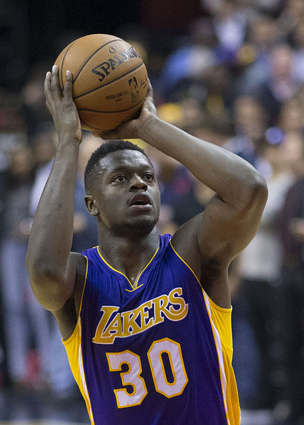

RJ・バレット（RJ Barrett） * 2000年6月14日生まれ * カナダ オンタリオ州 トロント出身 * 身長 6ft 6in 1.98 m * 体重 214 lb 97 kg * NBAドラフト 2019年 1巡目3位
* キャメロン・イライジャ・レディッシュ(Cameron Elijah Reddish) * 1999年9月1日生まれ * アメリカ ペンシルベニア州リスタウン出身 * 身長6ft 8in 2.03m * 体重218Ib 99kg * NBAドラフト 2019年 1巡目10位
* ジュリアス・ディオン・ランドル(Julius Deion Randle) * 1994年11月29日生まれ * アメリカ テキサス州ダラス出身 * 身長6ft 8in 2.03m * 体重249Ib 113kg * NBAドラフト 2014年 1巡目7位
* デリック・マーテル・ローズ(Derrick Martell Rose) * 1988年10月4日生まれ * アメリカ イリノイ州シカゴ出身 * 身長6ft 2in 1.88m * 体重198Ib 90kg * NBAドラフト 2008年 1巡目1位
* オビ・トッピン (Obi Toppin) * 1998年3月4日生まれ * アメリカ ニューヨーク州ブルックリン区出身 * 身長6ft 9in 2.06m * 体重220Ib 100kg * NBAドラフト 2020年 1巡目8位